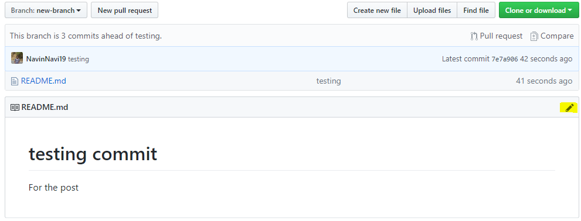
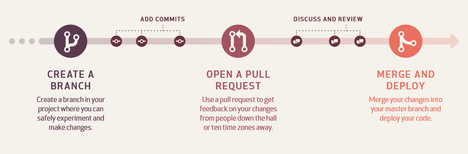
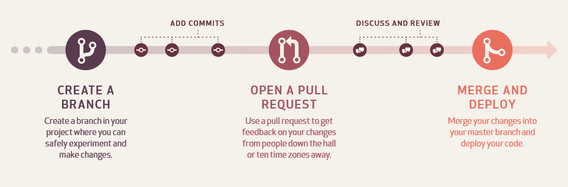

About Me
Greetings,
This is Navin from an IT security industry background for over a year and half as a Security Adiministrator.I am a Tech Enthusiast and also love to stay updated in the world of technology. I have started this website in the view of sharing my technical knowledge, personal experiences in parallel my learning.
With that said above, I have a little knowledge about basic programming also. But first when I decided to open a blog, I was put into a situation where I was not able to customize website to my needs. Because Wordpress and many other CMS have free blogging template but written in advanced HTML, CSS and PHP webpage template(well atleast I felt that way). So I started learning and developing web pages during the day and break them in the night to exploit the vulnerabilities. I hopw to update the contents and the look of this webpage on a weekly basis.
I hope you will find something worth your time.
Thoughts Become Things
What is git and how to use it effectively
- I have made this blog to quickly run you through the git basics and its commands.
- Let's start!!!!
What is Git?
- Git is version control system that means it stores and creates a timeline of all your changes done to the code.
- This allows you to return to your code when something gets messy or when needed to look at something that you did previously.
What is GitHub?
- GitHub is a cloud code hosting platform for version control and collaboration. It lets you and others work together on projects from anywhere. It's a go to place for most of the open source projects.
How does it work?

Working Directory
- Area where of our files and directories and changes are living the time.
Staging Area
- Files and directories that explicitly added to the staging area
Git Repository
- Where our snapshots are stored
Working with Git on Linux
Installing Git
- Open a terminal window.
- Copy, paste and run thethe following commands and hit Return.
- sudo apt-get update
- sudo apt-get upgrade
- sudo apt-get install git
Getting started
Execute
- git init - Inside a folder execute to make it as a working repository
- git status - To know what is going on in the working directory, what are the changes and what has been staged
Staging Process
Adding files
- git add . - To stage all the changes done in the current working directory like adding files and modifying the existing contents
- git add *file name* - To stage the particular file *file name* in which the changes were done
Adding multiple files of a certain type
- git add *.any extension* - To stage all the particular file types *.any extension* to which changes were done
Adding all files in directory (including hidden)
- git add -A - To add all files and folders from the directory that you're in. This is a good command for adding everything in your project, all at one time
Removing Files that are staged
- git reset HEAD *file name* - To unstage a particular file which is ready to be committed. will be seen as untracked file
Ignoring files
- touch .gitignore - Add files and folders to ignore those from staging and committing. These files will not be tracked any more. Keeping the files to only local usage
Commit the staged files
- git commit -m *message* - To commit the staged file or files to the git repository
Log view
- git log - To get the log of all the commits done
Git Branches

Listing all branches
- git branch - To list all the branches in a repository
Adding a branch
- git checkout -b *branch-name* - To create a new branch and will switch to it
Changing branches
- git checkout *branch-name* - To switch to an existing branch
Merging a branch
- git merge *branch-name* - Current branch will merge to an existing branch
Removing a branch
- git checkout -b *branch-name* - To remove an existing branch
Now comes the final part
- git remote add origin *repository ssh link* - Create a repository in GitHub(explained below) and get the SSH link to add to your local repository
- git remote -v - To view the status of the repository connection
- git push -u origin master - To push all the committed changes done to the working directory
- git pull - To get all the latest commits from the GitHub repository
Working with Github on Windows
Create a Repository
Repositories are used to store folders and files – anything about your project.
- Go to github.com
- In the upper right corner, next to your avatar , click and then select New repository.
- Name your repository.
- Write a short description.
- Select Initialize this repository with a README.md
- Click Create repository


Create a Branch
Create a new branch to make a copy of your repository in the master branch as working in new branch wont affect the master.
- Go to your new repository.
- Click the drop down at the top of the file list that says branch: master.
- Type a branch name into the new branch text box.
- Select the blue Create branch box or hit “Enter” on your keyboard.

Edit and commit changes
On GitHub, saved changes are called commits.
- Click the pencil icon in the upper right corner of the file view to edit.
- In the editor, write a bit about yourself.
- Write a commit message that describes your changes in new branch.
- Click Commit changes button.


Open a Pull Request
- Click the Pull Request tab and click the green New pull request button.
- Look over your changes in the diffs on the Compare page.
- Click the big green Create Pull Request button.
- Give your pull request a title and write a brief description of your changes.

Merge your Pull Request
- Click the green Merge pull request button to merge the changes into master, after the code review and approval.
- Click Confirm merge.
- Now that your changes are pushed to master, go ahead and delete the branch. If you wish!!!

Complete flow
 

Thanks to GitHub Guides for the article reference.